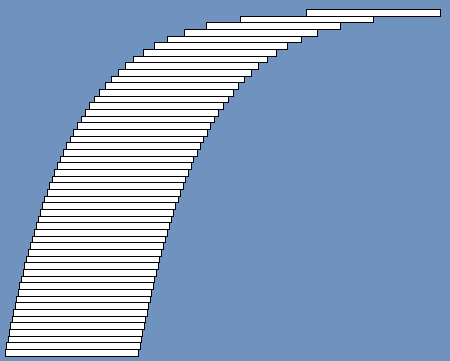
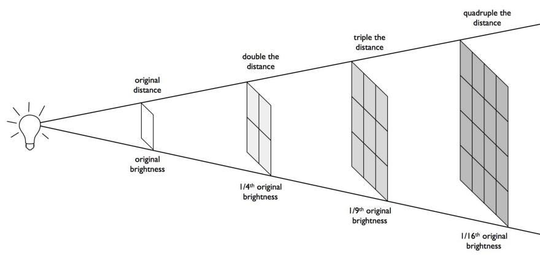
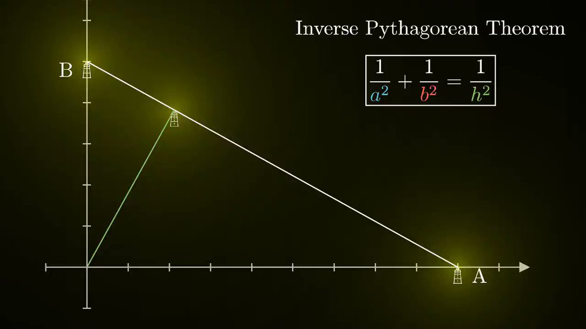
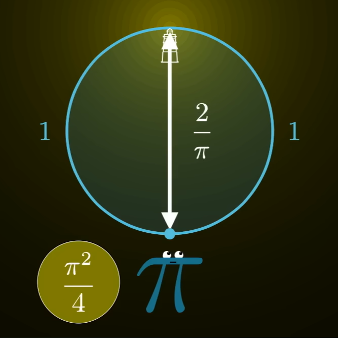
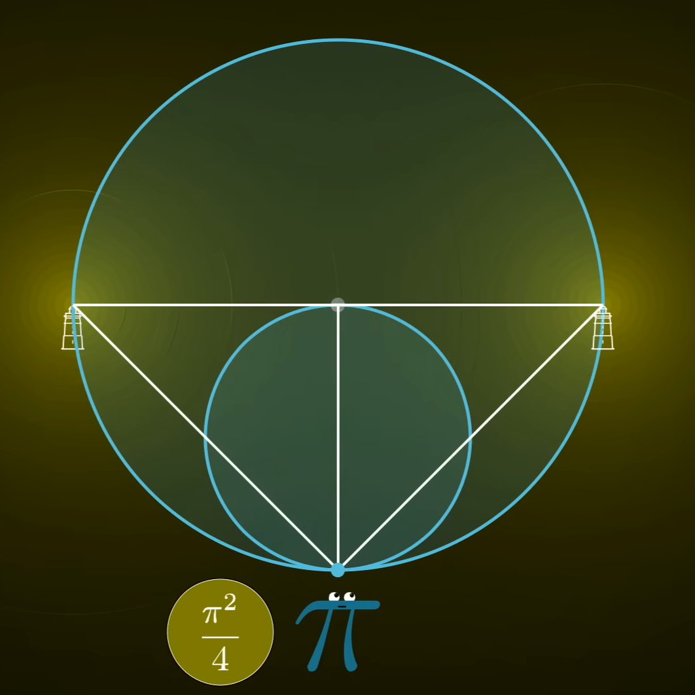
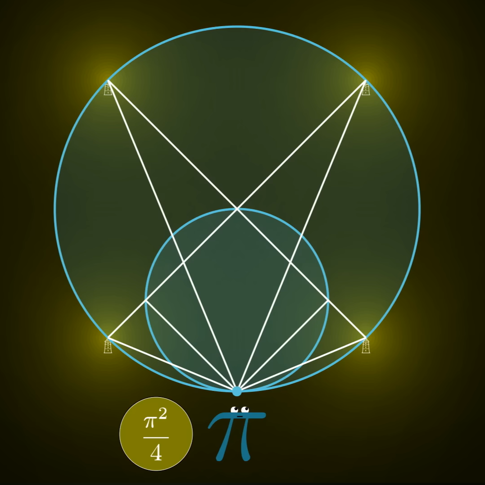
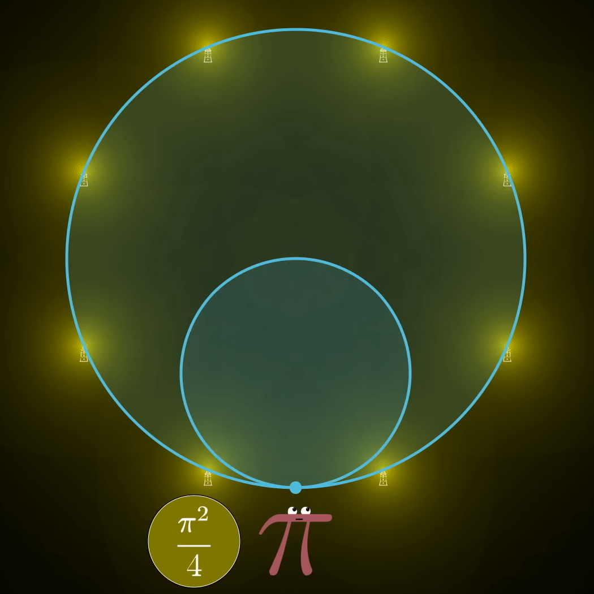
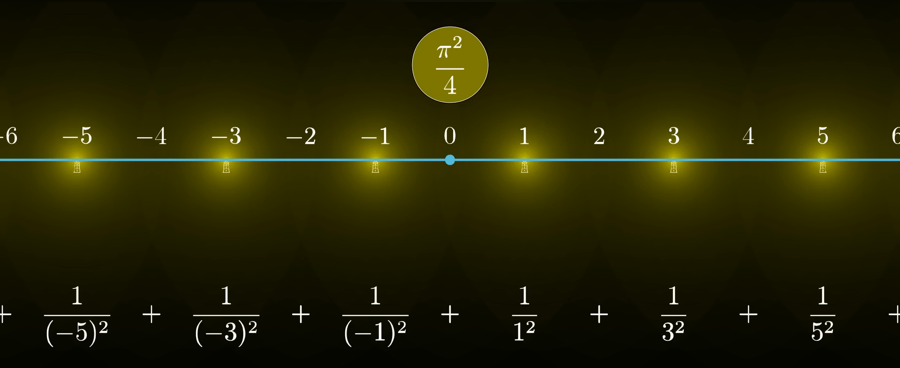
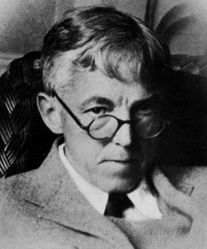

How Infinitely Small Contributions Create Unexpected Outcomes: The p-Series
Group: Indomie Beef Rendang
Authors: Cliff Pramana, Jason William Teja, Wilbert Lucell
Introduction
Imagine a curious cat observing a never-ending line of treats being arranged in a pattern. On the first step, the cat receives 1 full treat. On the second, it receives less than the previous. On the third, it receives even less of the previous. This pattern continues indefinitely, with the cat receiving smaller and smaller fractions of treats as it progresses along the line. The question arises: will the cat ever be satisfied, or will it continue to receive treats forever without reaching a point of contentment?
This leads us to the series \[ \sum_{n=1}^{\infty} \frac{1}{n^p} = 1 + \frac{1}{2^p} + \frac{1}{3^p} + \cdots \text{,} \] which is called a p-series. The convergence or divergence of this series depends on the value of \(p\).
- If \(p > 1\), the series converges, meaning the cat will eventually get a set amount of treats.
- If \(p \leq 1\), the series diverges, and the cat will, in theory, be infinitely satisfied.
The Harmonic Series
In the case where \(p = 1\), the series is called the harmonic series: \[ \sum_{n=1}^{\infty} \frac{1}{n} = 1 + \frac{1}{2} + \frac{1}{3} + \cdots \text{.} \] Despite the terms getting smaller and smaller, the harmonic series diverges. This means that even though the cat receives increasingly smaller treats, the total amount of treats grows without bound.
The cat knows this by doing a simple comparison. First, he groups terms of the harmonic series as follows: \[ \begin{align*} \sum_{n=1}^{\infty} \frac{1}{n} =& \;\;1 + \left(\frac{1}{2}\right) + \left(\frac{1}{3} + \frac{1}{4}\right) + \left(\frac{1}{5} + \frac{1}{6} + \frac{1}{7} + \frac{1}{8}\right) +\\ &\left(\frac{1}{9} + \frac{1}{10} + \frac{1}{11} + \frac{1}{12} + \frac{1}{13} + \frac{1}{14} + \frac{1}{15} + \frac{1}{16}\right) + \cdots \end{align*} \]
That is, excluding the first term, group the terms into sets of 1, 2, 4, 8, 16, and so on. A fact about fractions is that if \(a > b\), then \(\displaystyle \frac{1}{b} > \frac{1}{a}\).1 Then, every term in one group is always greater than the last term in the group. For example, \[ \frac{1}{3} + \frac{1}{4} > \frac{1}{4} + \frac{1}{4} \]
Then, \[ \begin{align*} \sum_{n=1}^{\infty} \frac{1}{n} >& \;\;1 + \left(\frac{1}{2}\right) + \left(\frac{1}{4} + \frac{1}{4}\right) + \left(\frac{1}{8} + \frac{1}{8} + \frac{1}{8} + \frac{1}{8}\right) +\\ &\left(\frac{1}{16} + \frac{1}{16} + \frac{1}{16} + \frac{1}{16} + \frac{1}{16} + \frac{1}{16} + \frac{1}{16} + \frac{1}{16}\right) + \cdots. \\ =& \;\;1 + \frac{1}{2} + \frac{1}{2} + \frac{1}{2} + \frac{1}{2} + \cdots \end{align*} \]
The right-hand-side contains the repeated sum of \(\frac{1}{2}\), which diverges. Adding a constant, that is the first term 1, does not change this fact. Since the harmonic series is at least this diverging sum, the series itself must diverge.
The General p-Series
For \(p\) greater than 1, the series is known as part of the Riemann zeta function2, denoted as \(\zeta(p)\). The convergence of the p-series for \(p > 1\) can be shown using the integral test or comparison test. One property of the p-series is that it decreases monotonically, where \(p\) affects that rate in which terms decrease. That is, as \(p\) increases, the treats shrink faster, and the total amount the cat receives approaches a finite but smaller limit.
That said, the simplicity of the series does not equate to simplicity in its computation. For most values of \(p\), the sum of the series cannot be expressed in a simple closed form. For example,
\[ \sum_{n=1}^{\infty} \frac{1}{n^3} = \frac{1}{1^3} + \frac{1}{2^3} + \frac{1}{3^3} + \cdots \] does not have a simple closed form (this series in particular is known as Apéry’s constant), though can be approximated numerically. This is the case for all odd integers of \(p\) greater than 1. However, for even integers of \(p\), the series can surprisingly be expressed in terms of \(\pi\).3 The following are the values of the series for increasing values of \(p\):
\[ \begin{align*} \sum_{n=1}^{\infty} \frac{1}{n^2} &= \frac{\pi^2}{6} \quad \\ \sum_{n=1}^{\infty} \frac{1}{n^3} &= 1.2020569... \quad \\ \sum_{n=1}^{\infty} \frac{1}{n^4} &= \frac{\pi^4}{90} \quad \\ \sum_{n=1}^{\infty} \frac{1}{n^5} &= 1.0369277... \quad \\ \sum_{n=1}^{\infty} \frac{1}{n^6} &= \frac{\pi^6}{945} \quad \\ \end{align*} \]
The simple nature of the p-series allows it to be incredibly useful in many areas of mathematics. In particular, the p-series is often used in the study of convergence and divergence of series, providing a useful benchmark in analyzing infinite series.
Visualizing the p-Series
The Harmonic Bridge
As a curious (and lazy) cat in Xiamen University Malaysia, the daily journey from LY3 to A3 can be unnecessarily exhausting. The pathway curved gently around the lake; sure, it’s scenic, but very inefficient.
“Why?” the cat wondered. “Why must I take this long, winding path when my destination is straight ahead? Surely there must be a shortcut.” One lazy afternoon, the cat kept pondering of a straight path across the lake, and soon, he dreamt of a solution.
The Leaning Tower of Lire
The Leaning Tower of Lire is a fascinating mathematical construction. By stacking identical blocks such that each subsequent block hangs slightly further than the previous, one could build a structure that extends far beyond its base. The Leaning Tower of Lire takes advantage of the behaviour of the harmonic series, where each block’s overhang represents the terms of the series.

The first layer has a half-width overhang over the second block. The second has a quarter-width overhang over the third block, and so on. The overhang of the \(n\)-th block is given by \(\frac{1}{2n}\). The total overhang of the tower is given by the sum of the series:
\[ \begin{align*} \sum_{n=1}^{\infty} \frac{1}{2n} &= \frac{1}{2} \cdot \sum_{n=1}^{\infty} \frac{1}{n} \\ &= \frac{1}{2} \left( 1 + \frac{1}{2} + \frac{1}{3} + \cdots \right) \end{align*} \]
With this theoretical construction in mind, the cat realized that the Leaning Tower of Lire could indeed extend infinitely far, as the harmonic series diverges. The cat’s dream of a shortcut across the lake was now feasible, and he began construction in his dream.
Using 1000 35-meter-long 2.5-centimeter-thick titanium blocks, the cat built a Leaning Tower of Lire. The tower had the following dimensions:
- Its height is approximately \(1000 \times 2.5 \text{ cm} = 25 \text{ m}\).
- Its total overhang is approximately \(\displaystyle 35 \text{ m} \cdot \sum_{n=1}^{1000} \frac{1}{2n} = 35 \text{ m} \cdot 3.74273... \approx 131 \text{ m}\).
From afar, the construction looked impossible, a suspended pathway formed by the elegant balance of forces. The cat4, now standing on the Leaning Tower of Lire, could cross the lake with ease. The dream was a success, and the cat could now cross the lake in a straight line, thanks to the properties of the harmonic series.
The Basel Problem
The Basel problem refers to the sum of the inverse of squares, that is the p-series for \(p=2\). Solved by Leonhard Euler in 1734 in the city of Basel, Switzerland, hence the name, the problem asks for the exact value of the series:
\[ \sum_{n=1}^{\infty} \frac{1}{n^2} = 1 + \frac{1}{2^2} + \frac{1}{3^2} + \cdots \]
Euler’s solution was a remarkable achievement, as he found that the sum of the series is equal to \(\frac{\pi^2}{6}\). Following Euler’s findings, there are numerous other ways to derive the sum of the series, including Fourier series, complex analysis, and rigorous mathematical proofs.
However, one elegant way to visualize the convergence of the series is through a series of lighthouses, where each lighthouse shines a light of decreasing apparent intensity, representing the terms of the series. Introduced by the 3Blue1Brown YouTube channel, and where all credit is given, the total brightness of all the lighthouses combined represents the sum of the series, which converges to the finite value \(\frac{\pi^2}{6}\).5
linked to his video on the Basel Problem
A Line of Lighthouses
Recall the previous cat who, on his bridge, imagined a never-ending line of lighthouses, each shining equally bright and are equally spaced apart. The cat now wonders, “How bright is the combined light of all the lighthouses?” Would it be infinitely bright, as is the case for the length of his theoretical bridge? Or would it be finite, reaching a certain brightness limit?
The cat first considers the apparent brightness of each lighthouse. He imagines the area illuminated by each lighthouse as a square. Suppose the first lighthouse is one unit away and shines onto this screen with a brightness of 1. The second lighthouse, which is twice the distance away, would shine at a square twice its width and height, resulting in an apparent brightness of \(\frac{1}{2^2} = \frac{1}{4}\) on this screen. The third lighthouse continues this pattern, shining at a square three times its width and height, resulting in an apparent brightness of \(\frac{1}{3^2} = \frac{1}{9}\) on the screen. Letting all these lighthouses shine together against one square, the total brightness gives us the sum of the inverse of squares, which is the Basel problem.

The question now is on how to evaluate this series, as the cat cannot simply add up all the brightnesses of the lighthouses. With that said, the cat decides a different approach, separating one lighthouse into two separate but identical lighthouses that, when shined together, gives the same apparent brightness as the original. From here, the cat remembers a vital theorem in geometry, the Pythagorean theorem, though more relevantly, the Inverse Pythagorean theorem.
Our Old Friend Pythagoras
The well-known Pythagorean theorem relates the length of the hypotenuse of a right triangle to the lengths of the other two sides. The Inverse Pythagorean theorem, on the other hand, relates the lengths of the two sides to the height from the right angle to the hypotenuse:
\[ \frac{1}{a^2} + \frac{1}{b^2} = \frac{1}{h^2} \]
The cat imagines himself as the corner of such triangle, with this height being the distance of the lighthouse from the screen. The lighthouse sits at the hypotenuse, and drawing a line normal to this point, the cat can separate the lighthouse into two, each positioned at the other two corners of this right triangle, identical to the original. This new approach gave the cat a new perspective on the problem. If he knows the intensity of one lighthouse, separating it infinitely into two, then four, then eight, and so on should give the same brightness as the original lighthouse. The problem now simply becomes on how to relate this to the sum of the series.

One notable peculiarity of the Basel problem is that the sum of the series converges to a value that is related to \(\pi\). As such, the cat naturally thinks of ways to relate the problem to a circle. And so, he discovered the following geometric construction, which he calls the Circle of Lighthouses.
The Circle of Lighthouses

The cat starts with a circle of diameter \(\frac{2}{\pi}\). If he sits at one point of the circle, and places the lighthouse at the opposite end of the circle, the cat would be a distance of one unit away along the circumference of the circle. The apparent brightness from this lighthouse would be the inverse of the square of the diameter, which turns out to be \(\frac{\pi^2}{4}\).
The cat then draws a circle twice as big, centered at the lighthouse. Using the lighthouse as a starting point, the cat draws a tangent line of the smaller circle through this lighthouse onto the larger circle. Connecting the two new points on the larger circle with the cat forms a right triangle, a key property of circles. The hypotenuse is the diameter of the larger circle, and the height from the right angle to the hypotenuse is the diameter of the smaller circle.
Using the Inverse Pythagorean theorem, the cat can now separate this lighthouse into two new lighthouses, positioned at the other two corners of the right triangle. In fact, from how these points were constructed, they are equidistant from each other along the circumference: 2 units apart within the 4-unit-circumference circle, where the cat sits between the two lighthouses.


The cat draws an even bigger circle, centered at the lighthouse with the same idea. This time, he draws a line from the new lighthouses through the center of the larger circle. The two points where this line intersects the larger circle are the new positions of the lighthouses, forming another right triangle with the cat. Doing this with the other lighthouse, the cat now has 4 lighthouses around the larger circle, each still 2 units apart from each other within the 8-unit-circumference circle and the cat sitting in the middle of two lighthouses.
Repeating this process to get 8 lighthouses on a 16-unit-circumference circle, then 16 lighthouses on a 32-unit-circumference circle, and so on, the cat can now separate the original lighthouse into infinitely many lighthouses, each shining with the same total apparent brightness as the original. Furthermore, as the circle becomes larger and larger, the circumference of the circle approaches a straight line.6 In this line, the cat sits in the middle of 2 lighthouses, 1 unit away from them. The other subsequent lighthouses are each 2 units away from each other, and still, the total apparent brightness is that of the original lighthouse: \(\frac{\pi^2}{4}\).

The Finishing Touches
With this new line of lighthouses, the cat can now construct a new series. If the cat places himself at the origin of the number line, all lighthouses sits on the odd numbers in both the positive and negative direction.

As such, he gets
\[ \begin{align*} \frac{\pi^2}{4} &= 2 \cdot \left( \frac{1}{1^2} + \frac{1}{3^2} + \frac{1}{5^2} + \cdots \right) \\ \implies \frac{\pi^2}{8} &= \sum_{n=1}^{\infty} \frac{1}{(2n-1)^2} \end{align*} \]
The only missing part of this new series are the even terms, and the cat has a clever trick in mind. The even terms of the series is akin to taking the original line of lighthouses and shifting their position such that they are twice as far as they were previously.
\[ \sum_{n=1}^{\infty} \frac{1}{(2n)^2} = \frac{1}{4} \cdot \sum_{n=1}^{\infty} \frac{1}{n^2} \]
The first lighthouse becomes two units apart, the second becomes four units, and so forth. As such, as they are twice as far, their apparent brightness is, again, the inverse of the square of this factor, that is the even terms are one forth of the Basel problem. Now, the even and odd terms must add up to the whole value of the series, and the even terms contribute to one forth of this value. The cat sees this as a simple algebraic problem:
\[ \begin{align*} \sum_{n=1}^{\infty} \frac{1}{n^2} &= \sum_{n=1}^{\infty} \frac{1}{(2n-1)^2} + \sum_{n=1}^{\infty} \frac{1}{(2n)^2} \quad \quad\\ &= \frac{\pi^2}{8} + \frac{1}{4} \sum_{n=1}^{\infty} \frac{1}{n^2} \\ \implies \frac{3}{4} \sum_{n=1}^{\infty} \frac{1}{n^2} &= \frac{\pi^2}{8} \\ \sum_{n=1}^{\infty} \frac{1}{n^2} &= \frac{\pi^2}{6} \end{align*} \]
Just like that, the cat solved the Basel problem. Where some may require rigorous and often complex algebraic manipulation and even integration, some requires one to see the problem in a different perspective. This key idea is relevant in all areas of mathematics. The question isn’t how to solve a problem directly, but how one manipulates the problem to something else that is, for the most part, far easier than dealing with the original problem head-on.
Conclusion
The p-series asks the simplest of questions: the sum of the inverse of powers, and yet its answer involves more than simple computation. Despite that, there is an odd beauty about the p-series, most notably the appearance of \(\pi\) when the series seems very unrelated to circles. It serves as a reminder that mathematics is not a mere collection of formulas and procedures, but a web of unexpected outcomes where ideas from seemingly distant fields converge in some harmonious way.
“The mathematician’s patterns, like the painter’s or the poet’s must be beautiful; the ideas like the colours or the words, must fit together in a harmonious way. Beauty is the first test: there is no permanent place in the world for ugly mathematics.”
– G. H. Hardy, A Mathematician’s Apology

(1877 - 1947)
Footnotes
\(a\) and \(b\) are positive integers in this case.↩︎
Though the Riemann zeta function is a more general concept that is defined for complex values of \(p\), the p-series happens to be a special case.↩︎
Although there is a closed form for even integers of \(p\), the derivation of the closed form is not trivial and requires advanced mathematical techniques beyond our current scope.↩︎
Assuming cats are weightless.↩︎
The following ideas are adapted from 3Blue1Brown’s explanation.↩︎
One can imagine that as a circle increase in size, its curve becomes flatter, approaching a straight line as the circle becomes infinitely large.↩︎